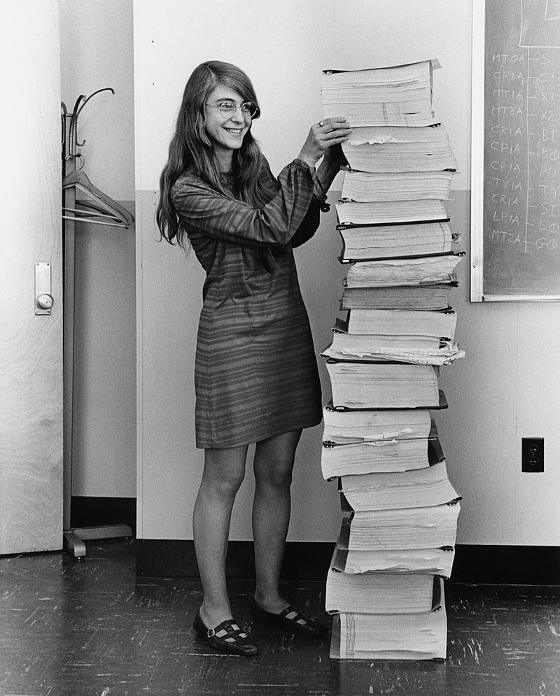
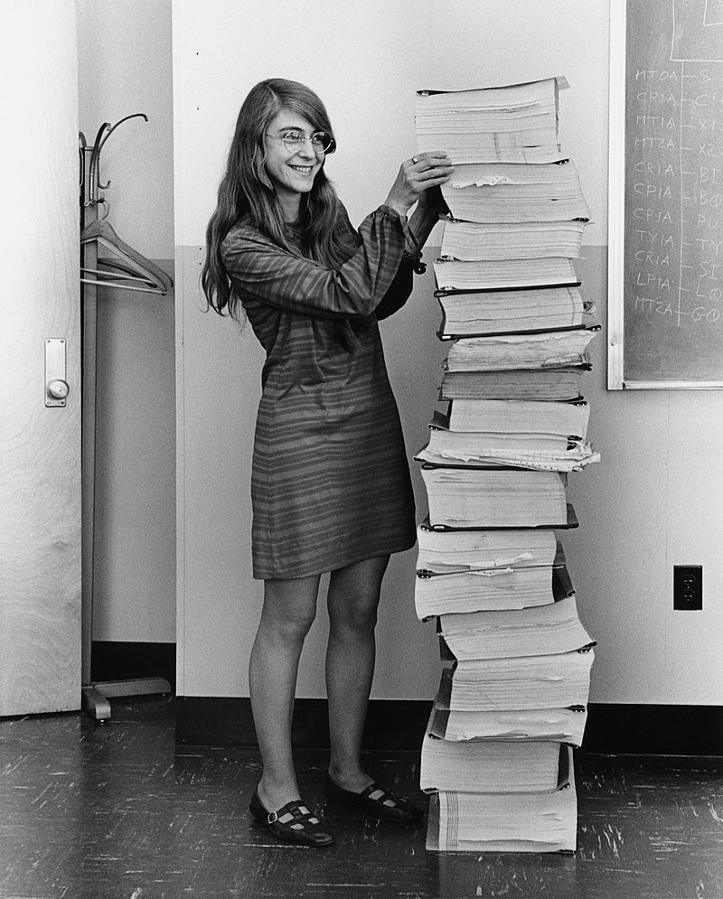

Mini-biografía de Margaret Hamilton
 



Margaret Hamilton (17 de agosto de 1936) es una científica computacional, matemática e ingeniera de Software.
Fue directora de la División de Ingeniería de Software del Laboratorio de Instrumentación del MIT, donde con su equipo desarrolló el software de navegación "on-board" para el Programa Espacial Apolo. En 1986, se convirtió en la fundadora y CEO de Hamilton Technologies, Inc. en Cambridge, Massachusetts. La compañía se desarrolló alrededor del lenguaje universal de sistemas basada en su paradigma de "desarrollo antes del hecho" (DBTF, del inglés Development Before the Fact) para sistemas de diseño de software. Acuñó el término "ingeniería de software" para distinguir entre el trabajo de hardware y otras ingenierías. A pesar de que su idea no fue bien recibida al inicio, eventualmente el software generó el mismo respeto que otras disciplinas.
Su enfoque del diseño de software fue pionero para la época, ya que los requisitos de robustez y tolerancia a fallos eran una prioridad para la seguridad y supervivencia de los astronautas durante los viajes a la Luna, es por esto que para muchos Margaret Hamilton es considerada una de las primeras personas en convertirse en Ingeniera de Confiabilidad del Sitio (del inglés Site Reliability Engineer).

Uno de sus mayores logros durante la dirección del desarrollo del sistema operativo para las misiones Apolo fue el sistema de excepciones y carga asincrónica de tareas que jugó un papel crucial momentos antes del alunizaje de la misión Apolo 11, ya que cuando los astronautas se estaban preparando para descender, la computadora empezó a arrojar los errores 1201 y 1202. Durante unos minutos no sabían si proceder con el alunizaje o no debido al error que mostraba la computadora, pero el equipo de Hamilton rápidamente encontró entre sus notas que ese código significaba que la computadora estaba limpiando la lista de tareas de procesos poco prioritarios para dedicarle todo el procesamiento a las funciones de descenso. Una vez resuelta la incógnita de qué significaba el mensaje de error, se procedió con el descenso en la Luna, el cual fue exitoso. Más tarde se descubrió que los mensajes de error no eran por un problema de software, sino que en la lista de procesos que le entregaron a Buzz Aldrin para la preparación de los instrumentos se lo instruyó a que encendiera un radar que no era utilizado durante el descenso, pero que podría ser útil en caso de requerir abortar la misión, este radar empezó a llenar el procesamiento del sistema con tareas de medición debido a todo tipo de lecturas que estaban llegando desde sus sensores, gracias a que Hamilton con su equipo tuvieron en cuenta como resolver un problema de este tipo, el hecho no terminó en ningún incidente.
Otro momento destacable durante la fase de diseño del sistema de navegación para las misiones Apolo fue la detección de un Bug gracias a que Lauren, hija de Margaret Hamilton, estaba jugando con el sistema de simulaciones híbridas de la computadora, y activo accidentalmente el programa de "pre lanzamiento" (prelaunch o p01) durante una misión, logrando un error en el sistema que derivó en la eliminación de los datos de navegación ya cargados. Dado el incidente Hamilton propuso una modificación en el sistema para evitar que pueda suceder en una misión real, pero la administración le respondió que no consideraba la posibilidad ya que los astronautas estaban entrenados para evitar este tipo de errores humanos. Sin embargo durante la misión Apolo 8, y a pesar de que Hamilton documentó el problema de manera clara, los astronautas ejecutaron accidentalmente el programa p01 en medio de la misión entrando en modo crítico sin datos de vuelo, pero gracias a Hamilton estaba documentado como volver a reenviar los datos de navegación en caso de que este accidente ocurriera. Poco después del incidente los cambios propuestos por Hamilton originalmente fueron aprobados para las siguientes misiones.